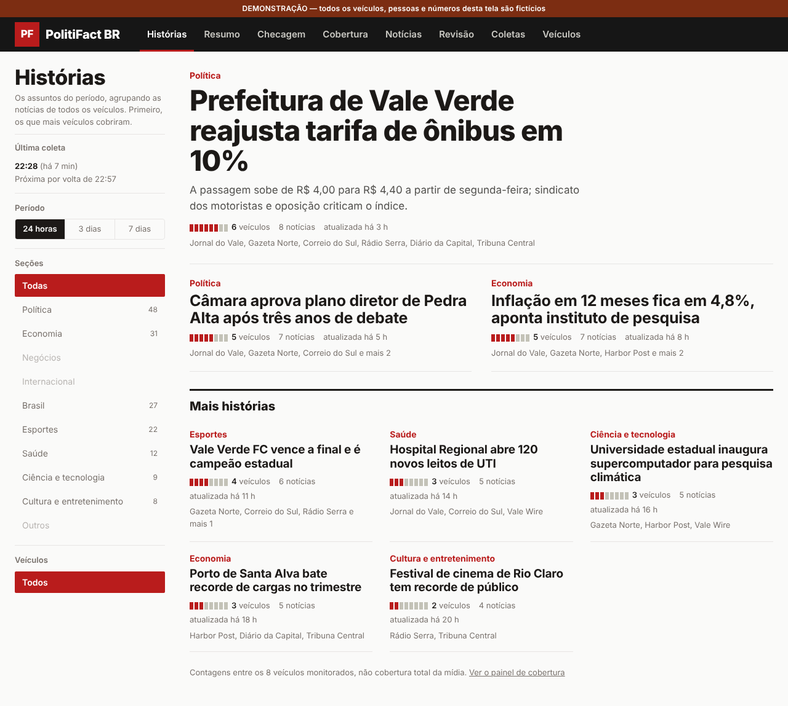
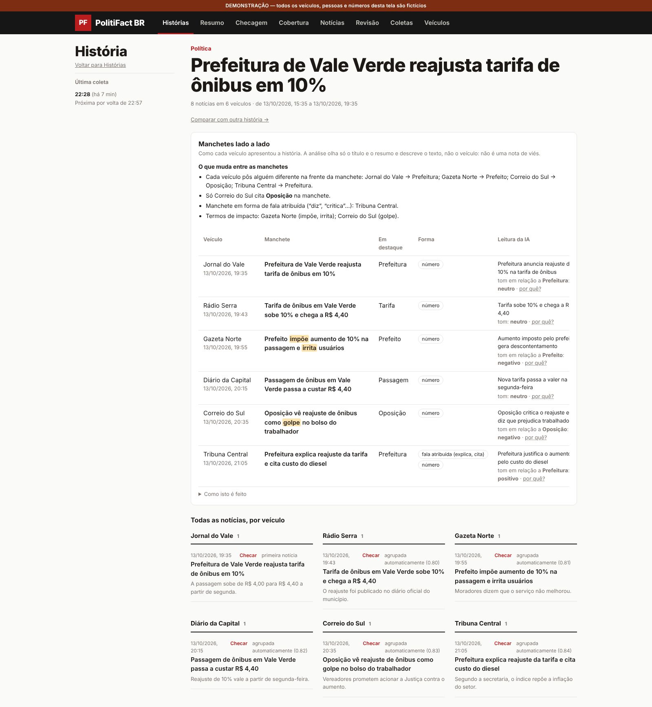
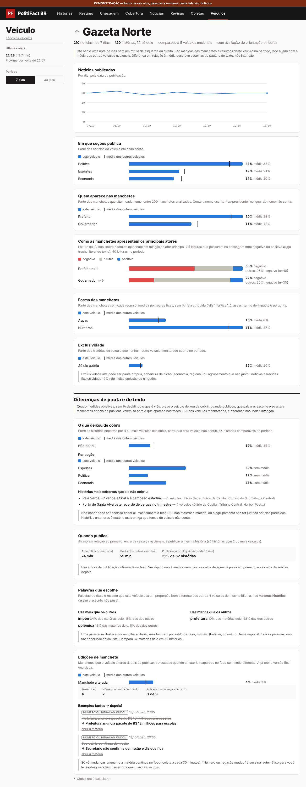
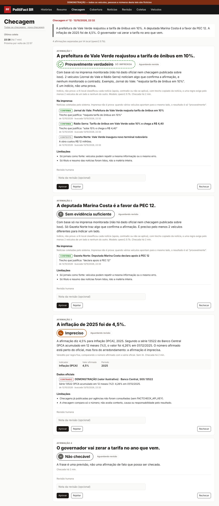
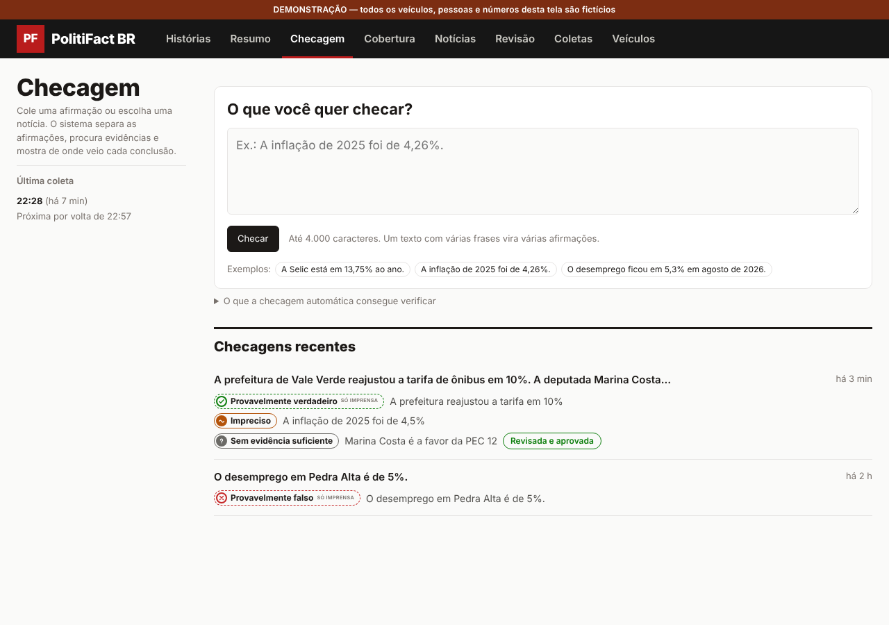
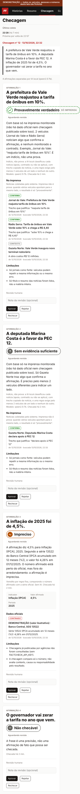
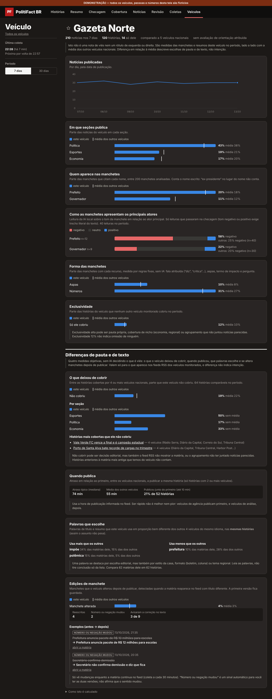

PolitiFact BR
Plataforma pessoal de monitoramento de notícias, análise de cobertura e checagem de fatos, com IA local (Ollama) e validação em cada etapa.
Todas as capturas usam dados fictícios (veículos, pessoas e números inventados), geradas pelas páginas reais do app. Os valores do Banco Central nas capturas são ilustrativos.
1. Histórias
As notícias de todos os veículos monitorados são agrupadas em histórias (embeddings bge-m3 + regras). A ordem é por quantos veículos cobriram. As contagens sempre dizem “entre os veículos monitorados”.

2. Como cada veículo contou a mesma história
Manchetes lado a lado com medidas objetivas (quem está em destaque, fala atribuída, termos de impacto) e uma leitura de tom feita por IA local. A leitura de tom só vale com trecho copiado literalmente do texto; sem ele, vira “incerto”. Isto descreve manchetes, não é uma nota de viés.

3. Diferenças de pauta e de texto por veículo
Quatro medidas, sem IA decidindo o que é viés: o que o veículo deixou de cobrir, quando publica em relação ao primeiro, que palavras escolhe nas mesmas histórias e se altera manchetes depois de publicar. Sempre comparado à média dos outros veículos do mesmo grupo, com intervalos e avisos de limite.

4. Checagem de fatos
Cola-se um texto ou escolhe-se uma notícia; o sistema separa as afirmações e checa cada uma, na ordem de confiabilidade:
- Dados oficiais (Banco Central): regra fixa compara o número afirmado com a série; sem IA.
- Checagens já publicadas por agências (Google Fact Check Tools): a IA só resume, com validação.
- Só imprensa: a IA classifica cada notícia (apoia, contradiz, irrelevante) com trecho literal; uma regra exige ao menos 2 veículos de um lado e nenhum do outro. O resultado é sempre “provavelmente”, nunca “verdadeiro/falso”.
- Sem base suficiente: “sem evidência”. Opinião ou previsão: “não checável”.
Todo veredito fica pendente de revisão humana, e versões anteriores são preservadas.



Tema escuro

Como a qualidade é medida
Há um conjunto de avaliação com gabaritos e comparação de modelos (python -m app.evals.run), descrito em backend/evals/README.md, e CI com lint, migrações, testes e tipos.